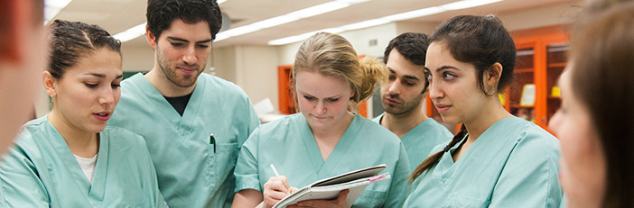

Admissions Overview
When you choose to study at a Rutgers Biomedical and Health Sciences (RBHS) school, you join a community of scholars at one of the nation’s leading comprehensive research universities. The full range of programs offered by RBHS schools—certificates, undergraduate, master’s, doctoral, postdoctoral, fellowships, residencies, and continuing education—provide many paths for your professional and personal goals.
Our offerings are vast. Your options are open. Apply now.
Admissions Basics
These centralized hubs are a good place to start learning about admissions at Rutgers.
School-Specific Admissions Information
Applications for most RBHS schools are handled directly by the schools, with some exceptions.
Certificates, Undergraduate, Graduate Admissions
- College of Nursing
- Ernest Mario School of Pharmacy
- Graduate School of Biomedical Sciences at Newark
- Graduate School of Biomedical Sciences at New Brunswick
- New Jersey Medical School
- Robert Wood Johnson Medical School
- Rutgers School of Dental Medicine
- School of Health Related Professions
- School of Nursing
- School of Public Health
Graduate Medical Education Admissions
Continuing Education
Continuing education registration is through individual schools and, in some cases, through central portals.
-
Explore Programs
Visit the websites of the Rutgers Biomedical and Health Sciences (RBHS) schools to explore program offerings. Learn more.
-
A National First: Pharm.D./M.D. Dual Degree

A dual-degree program combining a doctorate in pharmacy with a medical degree—developed by Rutgers' Robert Wood Johnson Medical School and Ernest Mario School of Pharmacy–is the first of its kind in the nation. Learn more.